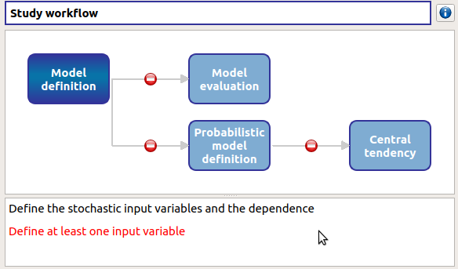
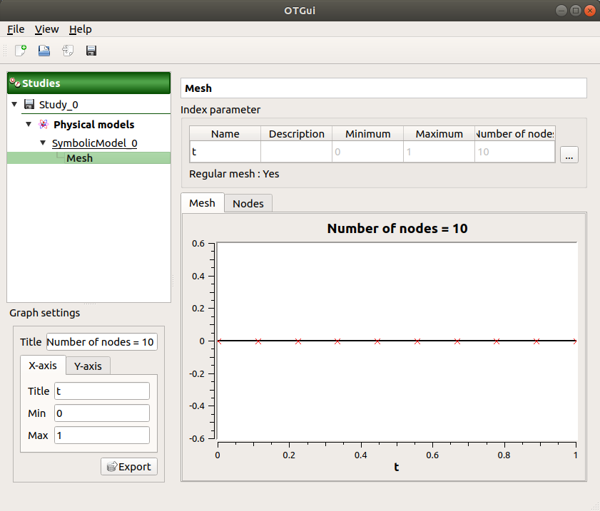
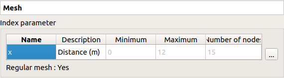
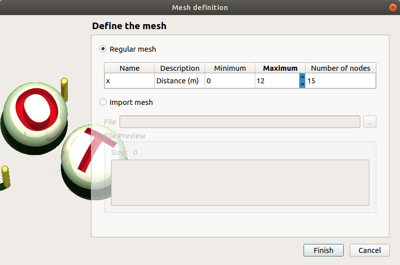
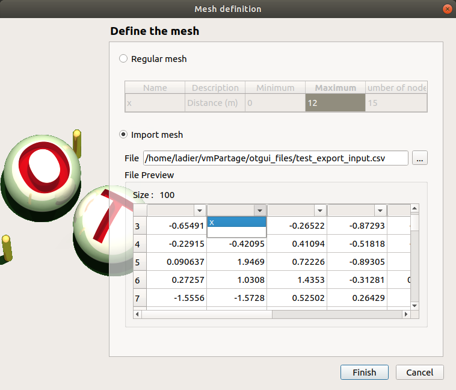
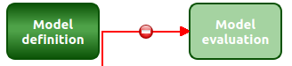
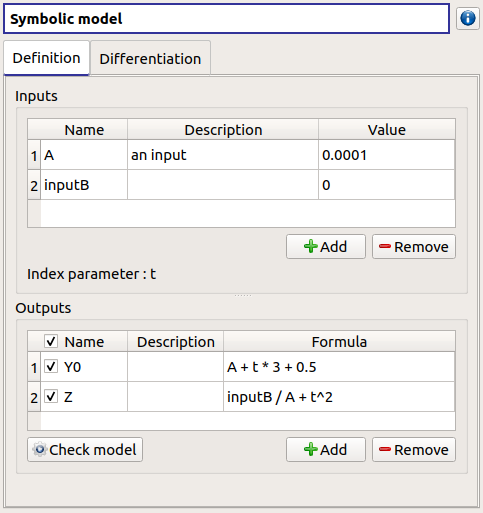
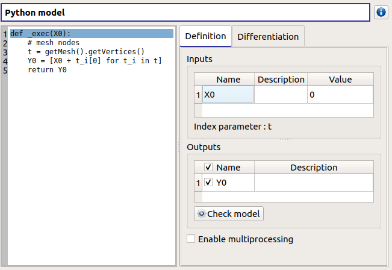
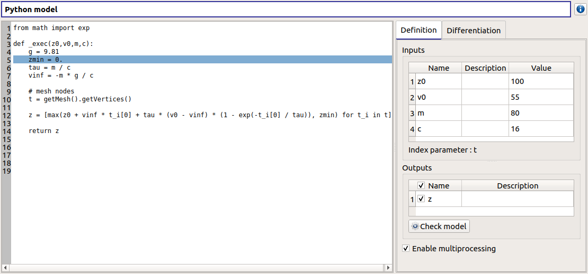
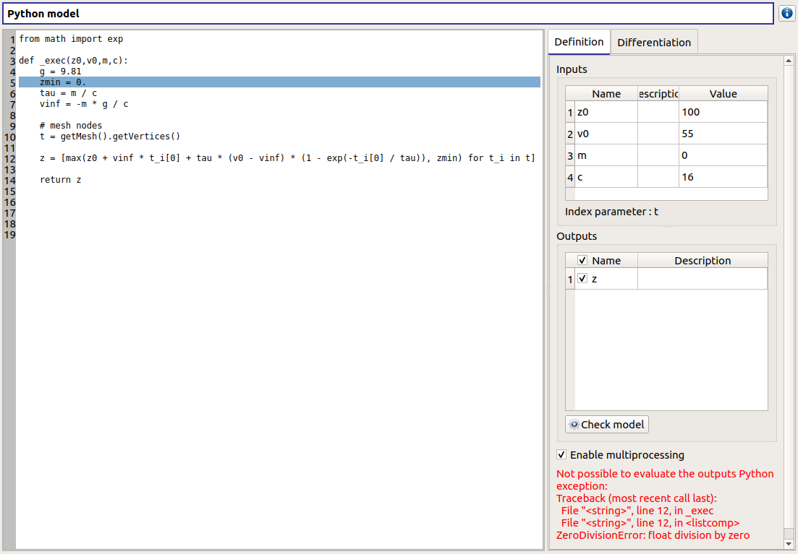

User manual - Define a field model¶
This section introduces the models defined with a field function (a vector as input and a field as output).
- Several types of physical models are available:
- Symbolic Field model: Physical model defined with analytical formulas and a mesh
- Python Field model: Physical model defined with a Python script and a mesh
For now, only the 1D mesh is available.
1- Creation¶
- There are several ways to create a new field model:
Select an item in the context menu of the study item

Click on a button of the study window

The creation of a field model adds two elements in the study tree, below the Physical models section: a model item and a mesh item.
Model item¶
- Different actions are available through the context menu of the model item (by right click):
- Rename: Rename the model
- Define the model: Open a new window to define the model
- Remove: Remove the model and all the analyses depending on it
The model item is associated with a Study workflow window.
This diagram displays the possible actions an user can perform in real time. An action is active when its box is in dark green and when a previous one is valid. A box is disabled when its box is in light green, and the previous one is not valid. When the mouse pointer is hovered over a box, an information message appears at the bottom of the window in order to specify what sort of actions the box proposes. If the box is disabled the message indicates why the previous one is not valid.
On the screenshot above, the mouse points over the Probabilistic model definition box: here the action is Define stochastic input variables and the dependence (below the main window), but this action is available only if the user defines at least one input variable in the physical model. So, here the only option of the user is to complete the model.
Mesh item¶
The model item is associated with a Mesh window.
This window allows to define a 1D mesh. The default mesh contains 10 nodes in the range [0, 1].
2- Mesh definition¶
The window shows the index parameter name, description, bounds and number.
To edit the index parameters, double-click on the column of interest (ex: name, description).

To modify the mesh click on … button: The window shows two ways to define a mesh:
- Regular mesh: define the bounds (default: [0, 1], expected: floats) and the number of nodes (default: 10, expected: positive integer)

- Imported mesh: load a file and choose one of its columns (default: first column)

3- Model definition¶
- To define a physical model:
Select Define the model in the context menu of the model item
Click on the Model definition box of the model diagram

When the definition is required, a new item named Definition appears in the study tree.
- Its context menu proposes these actions:
- Probabilistic model: Create stochastic input variables and dependence
- Evaluation: Evaluate the model at a point
The new Definition item is associated with a window, whose title is the name of the chosen physical model. In this window, the user can specify the model variables (Definition tab) and the finite difference step of each variable (Differentiation tab).
3-1 Symbolic model: define a field model with analytical formulas¶
- Define variables in the Definition tab:
- the Inputs section allows to:
- Add/remove inputs (Add/Remove button)
- Rename variables (default: (X0, X1, …), expected: string (alphanumeric characters only)) (Name column)
- Describe variables (default: empty string, expected: string (no restriction on the label format: floating point, integer, string, etc…))(Description column)
- Assign a value to the inputs (default: 0, expected: floating points or integers)(Value column)
- For convenience, the Index parameter name (previously defined in the Mesh window) is recalled here.
- the Outputs section allows to:
- Add/remove outputs (Add/Remove button)
- Enable/disable one or several variables, by checking off the corresponding line (default: all output lines are checked off). To perform the analyses, at least one output must be selected.
- Rename variables (default: (Y0, Y1, …), expected: string (alphanumeric characters only)) (Name column)
- Describe variables (default: empty string, expected: string (no restriction on the label format: floating point, integer, string, etc…))(Description column)
- Define the mathematical relationships between the index parameter and the input and output variables (Formula column). Note that the language used here differs from Python (see corresponding syntax for operators, mathematical functions and constants in the previous section).
- Launch the computation of the selected output values based on inputs, index parameter and formula (Check model button). It shall be used to test the physical model: this will add a new tab, described below. To save the output values, the user should use a Model evaluation.
3-2 Python model: define a field model with a Python editor¶

- The model definition window contains:
- the Python editor allows to define the model with the function _exec which:
- takes floating point arguments (detected as the inputs of the model) (default: X0)
- returns sequences of floats (detected as the outputs of the model) (default: Y0 = X0 + t) These sequences dimension must be equal to the number of nodes of the mesh.
- can use other statements defined in the Python editor
- can use the mesh as an OpenTURNS object Mesh using getMesh() method.
- the Inputs section allows to:
- List the inputs detected from the function _exec
- Describe variables (default: empty string, expected: string (no restriction on the label format: floating point, integer, string, etc…))(Description column)
- Assign a value to the inputs (default: 0, expected: floating points or integers) (Value column)
- For convenience, the windows reminds Index parameter name defined previously in the Mesh window.
- the Outputs section allows to:
- List the outputs detected from the function _exec
- Enable/disable one or several variables, by checking off the corresponding line (default: all output lines are checked off). To perform the analyses, at least one output must be selected.
- Describe variables (default: empty string, expected: string (no restriction on the label format: floating point, integer, string, etc…))(Description column)
- Require the parallelization of the computations (Enable multiprocessing button)
- Launch the computation of the selected output values based on inputs, and the Python function (Check model button). It shall be used to test the physical model: this will add a new tab, described below. To save the output values, the user should use a Model evaluation.
Here is an example of a more complex model definition:

Here is an example of an error message transmission:
